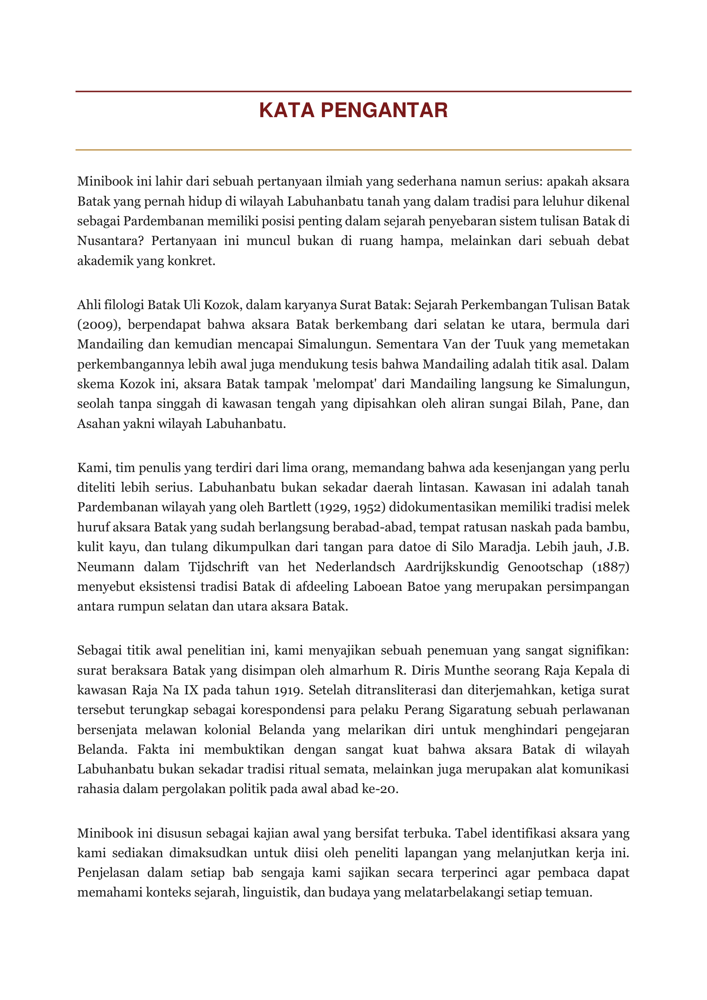
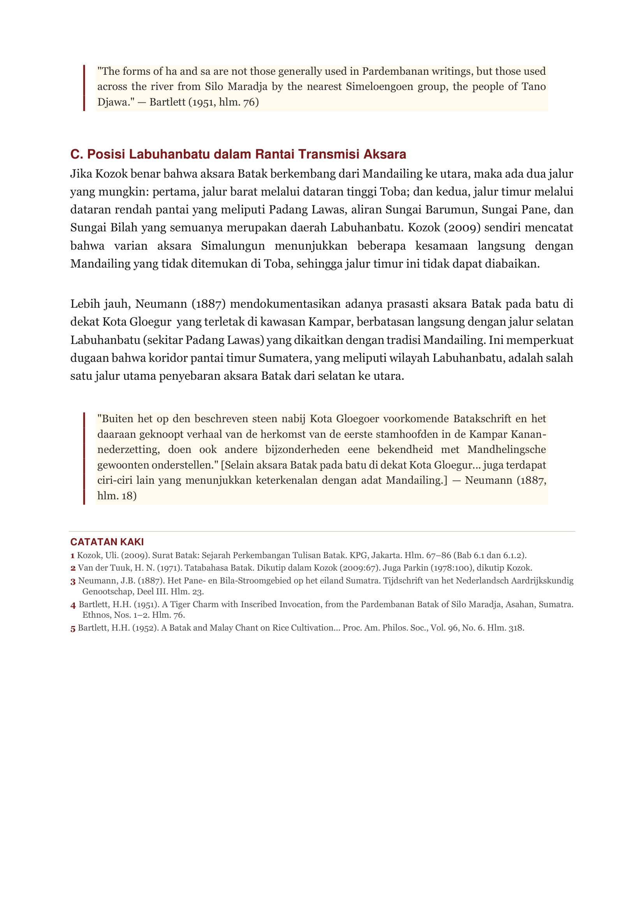
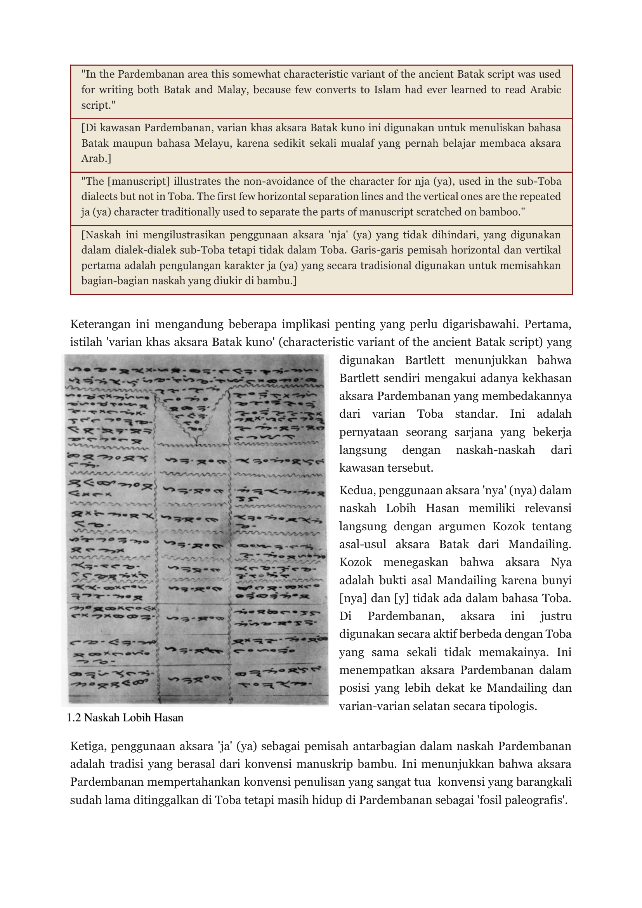

Aksara Labuhanbatu: Naskah Kuno Batak
"Pembelajaran dan Pelestarian Aksara Kuno Labuhanbatu"
Aksara Labuhanbatu
Klik tombol untuk membalik halaman naskah
Aksara Labuhanbatu
Katalog Naskah Kuno
Naskah Aksara Labuhanbatu merupakan warisan budaya tulis dari kawasan Labuhanbatu, Sumatera Utara. Ditulis pada medium tradisional dengan aksara Batak yang khas.
Labuhanbatu Heritage

RINGKASAN NASKAH
Naskah Aksara Labuhanbatu merupakan warisan budaya tulis tradisional yang berasal dari kawasan Labuhanbatu, Sumatera Utara. Naskah kuno ini ditulis menggunakan aksara Batak khas pesisir pada medium tradisional.
Isi naskah memuat kearifan lokal leluhur, yang meliputi mantra pelindung ritual, sistem penanggalan adat (parihalaan) untuk menentukan hari baik, petunjuk pengobatan tradisional kuno yang dilakukan oleh para Datu (tabib adat), serta silsilah keluarga/klan penting. Melalui digitalisasi dan analisis filologi, naskah ini dilestarikan sebagai bagian penting dari warisan budaya nusantara.


Biografi Naskah & Aksara Labuhanbatu
"Naskah ini bukan sekadar tulisan, ia adalah detak jantung intelektual masyarakat Batak di pesisir Labuhanbatu yang terpatri dalam lembaran kuno."
Aksara Labuhanbatu merupakan sistem tulisan tradisional yang berkembang di wilayah Labuhanbatu, Sumatera Utara. Naskah ini ditulis menggunakan tinta organik di atas medium tradisional, mencerminkan kearifan lokal leluhur Batak yang kaya.
Melalui proyek digitalisasi dan pembelajaran filologi ini, kami mempelajari serta memperkenalkan makna yang terkandung di dalam naskah — mulai dari mantra pelindung, sistem penanggalan, hingga catatan sejarah lokal yang berharga.
Video Dokumentasi & Proyek
Simak proses penelusuran, digitalisasi, dan analisis naskah kuno Aksara Labuhanbatu secara langsung melalui video dokumentasi di bawah ini.
Anggota Kelompok
Kolaborasi mahasiswa lintas program studi Universitas Sumatera Utara dalam pembelajaran, pelestarian, dan digitalisasi naskah kuno Aksara Labuhanbatu.
Jhons Steven
NIM. 240703011
Gunawan
NIM. 240904060
Khansa Fazian Oneal
NIM. 240904066
Juan Putra Hamdani Daulay
NIM. 240904004
Dzakwan Al Matin
NIM. 240904105
Rafi Andara Nst
NIM. 241402095
Ketrin Br Purba
NIM. 240709021
Lestari Nauli Pasaribu
NIM. 240709035
Wahyu Saleh Alfarisyi
NIM. 240501060
Keisha Gea
NIM. 240710024